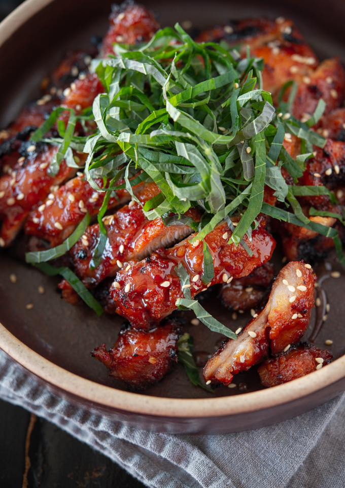

Skillet Chicken Bulgogi

Description
Chicken bulgogi is an easy and quick Korean BBQ chicken recipe made with gochujang.
Ingredients
- 6 chicken thighs, boneless & skinless
- 3 tbsp Korean chili paste (gochujang)
- 1 tbsp Korean chili flakes (gochugaru), optional
- 1 tbsp soy sauce
- 1-2 tbsp light brown sugar
- 1 tbsp minced garlic
- 1 tsp ginger paste
- 1 tbsp Korean corn syrup (mulyeot)
- 1 tbsp sweet rice wine (mirim), optional
- 1 tbsp sesame oil
- 1/2 tsp black pepper
- 1 tbsp toasted sesame seeds to garnish
- 5-6 Korean perilla leaves (kkatnip), thinly sliced, to garnish, optional
Directions
- Out a piece of plastic wrap over chicken thighs and pound with a meat hammer to stretch and tenderize; set aside.
- In a large mixing bowl, mix together gochujang, gochugaru (if using), soy sauce, brown sugar, garlic, ginger, corn syrup, rice wine, sesame oil, and pepper. Add the chicken thighs and toss together to coat evenly. Let the chicken rest on a room temperature for 10 minutes.
- Preheat the oven to broil; place an oven shelving to 5-6 inch below the heat source. Grease a cooling rack with a spray oil and place on top of a large baking pan (half sheet size) lined with foil.
- Spread the chicken pieces on the rack without overlapping. Broil 4-5 minute or until the surface is slightly charred. Turn the chicken to the other side and broil for another 4-5 minutes or until the chicken is fully cooked. Keep an eye on the chicken so that you don't char them too much.
- Cut the chicken thighs into a bite size chunks and place in a serving dish. Garnish with thinly sliced perilla leaves and toasted sesame seeds. Serve hot with rice.